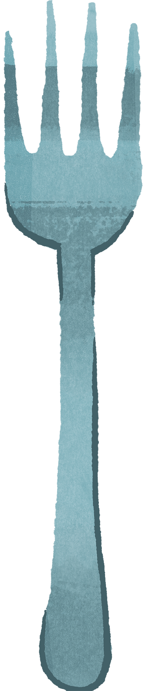
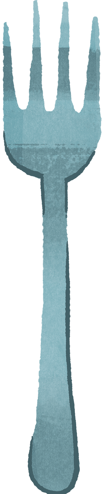
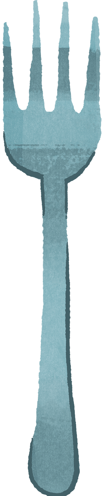
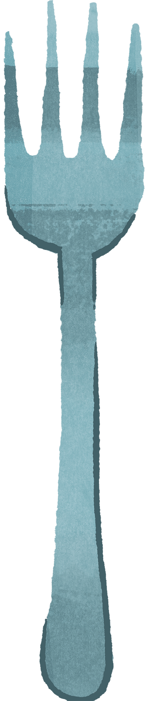

 

Alice had not gone much farther before she came in sight of a table set out under a tree, and the March Hare and the Hatter were having tea at it: a Dormouse was sitting between them, fast asleep.
The table was a large one, but the three were all crowded together at one corner of it: "No room! No room!" they cried out when they saw Alice coming. "There's plenty of room!" said Alice indignantly, and she sat down in a large arm-chair at one end of the table.
"It wasn't very civil of you to sit down without being invited," said the March Hare.
"I didn't know it was your table," said Alice; "it's laid for a great many more than three."
The March Hare opened his eyes very wide on hearing this; but all he said was, "Why is a raven like a writing-desk?"
"I give up," Alice replied: "what's the answer?"
"I haven't the slightest idea," said the March Hare.
"Nor I," said the Hatter. "I want a clean cup. Let's all move one place on."
He moved on as he spoke, and the Dormouse followed him: the March Hare moved into the Dormouse's place, and Alice rather unwillingly took the place of the March Hare. The Hatter was the only one who got any advantage from the change: and Alice was a good deal worse off than before, as the March Hare had just upset the milk-jug into his plate.

"Really," said Alice, very much confused, "I don't think—"
"Then you shouldn't talk," said the Hatter.
This piece of rudeness was more than Alice could bear: she got up in great disgust, and walked off; the Dormouse fell asleep instantly, and neither of the others took the least notice of her going, though she looked back once or twice, half hoping that they would call after her: the last time she saw them, they were trying to put the Dormouse into the teapot.
"At any rate I'll never go there again!" said Alice as she picked her way through the wood. "It's the stupidest tea-party I ever was at in all my life!"
Just as she said this, she noticed that one of the trees had a door leading right into it. "That's very curious!" she thought. "But everything's curious today. I think I may as well go in at once." And in she went.